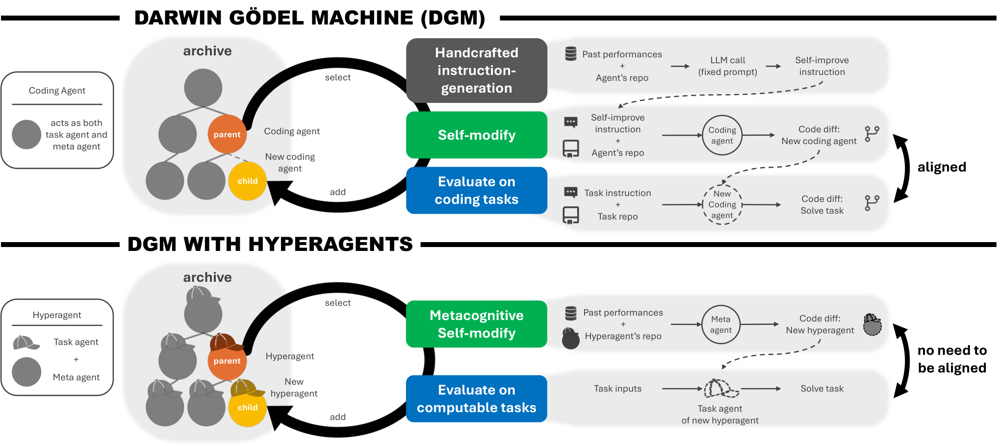
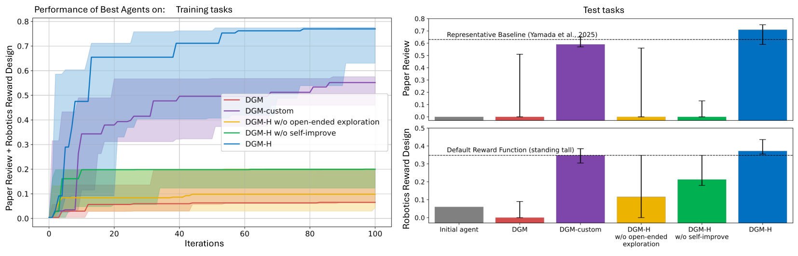

Hyperagents: Metacognitive Self-Modification atop the Darwin Gödel Machine
TL;DR
- "Hyperagents" (arXiv 2603.19461, v1 March 2026; Jenny Zhang, Bingchen Zhao, Wannan Yang, Jakob Foerster, Jeff Clune, Minqi Jiang, Sam Devlin, Tatiana Shavrina — UBC/Vector + Edinburgh + NYU + FAIR/Meta Superintelligence Labs; code at github.com/facebookresearch/Hyperagents) fuses the task agent and the meta agent into one editable program, so the procedure that generates self-modifications is itself modifiable — metacognitive self-modification.
- The diagnosis: the Darwin Gödel Machine improves at self-improving only because evaluation and self-modification are both coding; its instruction-generation step is handcrafted and frozen. DGM-Hyperagents (DGM-H) drops that alignment assumption: paper review test score 0.0 → 0.710 (AI-Scientist-v2 baseline: 0.630), robotics reward design 0.060 → 0.372 (hand-written default reward: 0.348) — vanilla DGM scores 0.0 on both — with Polyglot coding comparable to DGM.
- The headline experiment is meta-transfer: hyperagents evolved on paper review + robotics, then frozen and dropped into unseen Olympiad-math grading, achieve imp@50 = 0.630 (CI 0.540–0.630) versus ≈0 for both the initial meta agent and transferred DGM-custom agents; the transferable meta-improvements are things like persistent memory and cross-generation performance tracking.
Why this matters
Every self-improving system in this tracker has a fixed point: the part of the loop a human wrote and the loop cannot touch. In the DGM lineage it is surprisingly specific — a handcrafted mechanism that reads past evaluations and the agent's repo and emits a self-improve instruction telling the agent where to modify itself. The DGM still "improves at improving," but via a domain coincidence: better coding agents write better self-edits because the self-edit is a coding task. Swap the domain to peer review or reward design and task skill no longer feeds back into modification skill. Bolting on a meta-meta level just shifts the frozen layer upward — infinite regress; the only structural exit is self-reference, putting the modifier inside the modifiable program. The idea is as old as Schmidhuber's self-referential learners (cited directly), but DGM-H is the first practical instantiation where "the meta agent rewrote its own improvement procedure, and the rewrite transferred to a new domain" is a measured result rather than an aspiration: does the system improve its ability to improve, and is that ability portable?
The core idea
An agent is any computable program (Python, optionally calling frozen FMs and tools). A task agent solves tasks; a meta agent modifies agents given the archive of previous agents and evaluations. A hyperagent packages both into one self-referential program, so a self-modification can edit the task-solving logic, the shared tooling, or the meta agent's own modification procedure — including the code that will produce the next modification.

Figure 1 from the paper: (top) the DGM's self-improvement instruction generator is fixed and handcrafted, and its recursion works only when task performance and self-modification skill are aligned (both coding); (bottom) DGM-H makes the meta agent part of the editable program, so no alignment is required.
DGM-H keeps the DGM's open-ended, archive-based evolution wholesale: an archive seeded with one initial hyperagent, and a loop alternating metacognitive self-modification (selected parents generate modified versions of themselves) with evaluation (children are scored and added back as stepping stones). Two components deliberately stay handcrafted and frozen in the main experiments — parent selection and the evaluation protocol — to isolate the effect of hyperagent self-modification (Appendix E.5 makes parent selection editable too).
The initial hyperagent is intentionally minimal: a frozen FM with a bash tool and a file-edit tool; the task agent is a single FM call; the meta agent receives the repo path, previous evaluation results, and the remaining iteration budget, and may modify any part of the codebase. Everything the system becomes — parsing, pipelines, memory, trackers — it has to build itself.
What "the meta-level procedure is editable" means is easiest to read off the two algorithms. The DGM's inner line is instr ← InstrGen(a); a' ← a.Modify(a, instr). InstrGen is a fixed diagnose_prompt living in the driver, outside the agent's repository: it pastes in the agent's implementation plus its running log and demands ONE repository-agnostic improvement plan, returned as JSON (log_summary, potential_improvements, improvement_proposal, implementation_suggestion, and a problem_description phrased as a GitHub issue). The agent can neither read nor rewrite that template; DGM-custom hand-edits it per domain and re-freezes it. DGM-H deletes the step — a' ← a.Modify(a, 𝒜) — and the meta agent's whole starting instruction is one line: Modify any part of the codebase at '{repo_path}'. Diagnosis is not removed, it is relocated: the only way to get any is for the meta agent to write it into a file inside the repo it was handed. That is what the diffs show — an _analyze_evaluations() method that globs the last ten evaluation JSONs, tallies successes and failures, and splices a success-rate summary into the next modification prompt. The agent re-invented InstrGen as a mutable function inside the program rather than a constant in the harness.
Parent selection (fixed, inherited from DGM) is performance-proportional with a novelty bonus. With archive scores \(\alpha_i\) and \(\alpha_{mid}\) the mean of the top-\(m\) agents (\(m=3\)):
where \(\lambda=10\) sharpens selection around the moving frontier and \(n_i\) is the number of compiled children of agent \(a_i\), down-weighting over-exploited parents. Every archive member stays eligible forever, and \(\alpha_{mid}\) is recomputed each iteration, so the sigmoid re-centres on the frontier as the archive improves and yesterday's champion decays toward the tail. At \(\lambda=10\) an agent a tenth of a point below the frontier mean gets sigmoid weight 0.27 against 0.50 for one sitting on it; parents are drawn independently with replacement, falling back to uniform \(1/(t+1)\) if all weights vanish. \(n_i\) counts only children that compiled — a parent whose offspring crash is never penalised for it.
To measure "ability to improve" separately from task skill, the paper defines improvement@k: freeze a meta agent \(M\), let it generate up to \(k\) task agents from initial task agent \(A\) under algorithm \(\mathcal{G}\), and report
i.e., the best generated task agent's test gain over the seed. Transfer agents are picked from source-domain archives by a lineage-discounted growth score \(G_{\gamma}(i)=\frac{1}{|\mathcal{D}(i)|}\sum_{j\in\mathcal{D}(i)}(\alpha_{j}-\alpha_{i})\,\gamma^{\mathrm{dist}(i,j)}\) with \(\gamma=0.6\) and a minimum of 3 descendants — favoring agents whose descendants improve quickly, the signature of a good improver rather than a good scorer.
How it works
# DGM-Hyperagents (Algorithm 1 + Secs. 3, A.2, A.4, 4.2)
evaluate initial hyperagent a0 on tasks T; archive A <- {(a0, s0)}
for t = 1..T_max: # 80 iters (Polyglot) / 100 (other domains), 5 runs
# ---- parent selection (handcrafted; fixed in main experiments) ----
alpha_mid <- mean score of top-3 agents in A
for a_i in A:
w_i <- sigmoid(10 * (alpha_i - alpha_mid)) * 1/(1 + n_children_compiled(a_i))
parents ~ Categorical(w / sum(w)) # sampled with replacement
for a in parents:
# ---- metacognitive self-modification ----
a' <- a.meta_agent.modify(a, A) # the meta agent may edit ANY file:
# task agent, tools, memory, and its own
# modification procedure
# ---- staged evaluation ----
s' <- evaluate(a'.task_agent, small subset) # 10 tasks (or 3 robot reps)
if promising: s' <- evaluate on full training set, all domains jointly
else: s' <- 0 for all unevaluated tasks
if a' compiles: A <- A + {(a', s')}
# multi-domain runs: selection uses the average score across domains
return best agent by validation score (training score if no validation split)
Domains: Polyglot coding (same splits, FMs, and 80-iteration budget as the DGM paper), paper review (binary accept/reject on real conference submissions — hard to verify, subjective), robotics reward design (write a reward function, train a quadruped with RL in the Genesis simulator; train: walk forward; held-out test: maximize torso height, which needs a different behavior — jumping), and IMO-GradingBench math-solution grading, held out entirely for meta-transfer. Self-modification uses Claude 4.5 Sonnet (3.5 on Polyglot to match DGM); evaluation FMs vary per domain, chosen on cost, rate limits, latency and competence (GPT-4o for review, o4-mini for math grading, temperature 0 everywhere except o4-mini at 1.0).
The budget breakdown is worth pausing on. A 100-iteration run burns ~33M tokens in the self-modification phase alone — ~330K per iteration for the meta agent to read the repository and the previous evaluation dumps and rewrite files through its two tools. Evaluation is comparatively cheap: 0.506M tokens per iteration in the joint paper-review-plus-robotics setting (0.5M for 100 review tasks, 0.006M for 6 robot reps), versus 0.89M for 60 Polyglot tasks and 0.11M for 100 IMO-GradingBench items. The paper reports ~88.6M tokens total (its own line items sum to 83.6M). Either way the ratio is the point: deciding what to change costs several times more than checking whether the change worked. All results: medians over 5 runs, 95% bootstrap CIs from 1,000 resamples, Wilcoxon signed-rank tests.
Results
- Coding sanity check (Polyglot): DGM-H improves the 50-task training subset 0.140 → 0.340 (CI 0.300–0.380) and the full benchmark 0.084 → 0.267, comparable to the original DGM's 0.140 → 0.380 / 0.142 → 0.307 — despite no handcrafted coding-specific machinery.
- Beyond coding: vanilla DGM collapses — test 0.0 on paper review (CI 0.0–0.510) and 0.0 on robotics (CI 0.0–0.090). Hand-customizing its instruction generator per domain (DGM-custom) recovers 0.590 / 0.348. DGM-H reaches 0.710 (CI 0.590–0.750) on paper review and 0.372 (CI 0.355–0.436) on robotics — beating the AI-Scientist-v2 reviewer baseline (0.630) and the default hand-written reward (0.348). DGM-H > DGM is significant (p < 0.05); DGM-H > DGM-custom is a higher median but not significant. Qualitatively, DGM-H's reward designs almost always discover jumping on the torso-height test task where DGM-custom stays stuck standing tall.

Figure 2 from the paper: DGM-H (blue) vs DGM (red), DGM-custom (purple), and ablations on paper review and robotics reward design; dashed lines are the static baselines.
- Ablations: freeze the meta agent (DGM-H w/o self-improve, ≈ ADAS) and test scores fall to 0.0 / 0.213; remove the archive (w/o open-ended exploration) and they fall to 0.0 / 0.116 — both significantly below DGM-H. Metacognition and population-based stepping stones are both necessary.
- Improving the ability to improve (the key table): every arm is held-out IMO grading with the meta agent frozen, so only agent-generation skill is under test. The initial meta agent scores imp@50 = 0.0 (CI 0.0–0.0) under DGM w/o self-improve and 0.0 (CI 0.0–0.130) under DGM-H w/o self-improve — the generation algorithm is not the missing ingredient. Transferred DGM-custom meta agents start at 0.0 (CI 0.0–0.010), finish at 0.0 (CI 0.0–0.020), imp@50 0.0 (CI 0.0–0.010): their source-domain gains were domain customization, not improver skill. Transferred DGM-H hyperagents also start at 0.0 (CI 0.0–0.0) — the domain shift wipes their task ability out entirely — and reach 0.630 (CI 0.540–0.630), p < 0.05.
- What the hyperagents actually built (Appendix E.3; none of it requested): eval-context injection into the modification prompt; compute-aware planning branching on
iterations_left(>5 → architecture, >2 → refinement, else conservative edits only); bias detection on label distributions at a 0.8-ratio threshold, which in one run caught a 99% accept rate scoring 49% accuracy and corrected it to 63%; aPerformanceTrackerwithrecord_generation,get_improvement_trend(5-window moving average) andget_statistics; reusablePromptTemplateclasses and anIMPROVEMENTS.mdof root-cause write-ups; and aMemoryToolwriting timestampedmemory.jsonentries — synthesized insights ("Gen55 has best accuracy but is too harsh"), causal hypotheses ("gen65 changes over-corrected") and plans ("combine gen55's critical reasoning with gen64's balance"). - Compounding across runs: continuing DGM-H for 200 iterations on math grading from transfer hyperagents reaches 0.640 vs 0.610 from scratch (higher median, not significant). Seeding with the ProofAutoGrader baseline plus a transferred meta agent yields 0.700 vs the baseline's 0.670; on the full IMO-GradingBench the improved grader ("BetterGrader") lifts accuracy 0.561 → 0.601 by pulling intermediate solutions out of the extreme labels (Almost recall +18.52, Partial +10.50).
How it connects
- AIDE²: first evidence of RSI — complementary axes: DGM-H makes the improver editable but never asks whether the loop beats human R&D; AIDE² holds the improver's structure fixed but measures efficiency against a human baseline. Weco's companion "4 Levels" post files HyperAgents (with DGM and HGM) at Level 0 — concept demonstration, not measured net-positive acceleration.
- Mendel Gödel Machine upgraded the DGM's mutation step with comparative evidence; DGM-H makes the mutation step itself editable. Orthogonal and stackable — and a hyperagent could discover MGM-style comparative diagnosis on its own; its bias-detection and multi-generation-refinement mechanisms are primitive steps that way.
- Recursive Harness Self-Improvement (Sakana/Berkeley) is the prompt-level miniature — the harness spec revises itself from pairwise feedback; DGM-H is the code-level maximal version.
- DarwinX evolves a harness population with frozen variation machinery and a preserve-and-extend admission contract; DGM-H evolves the variation machinery but keeps admission trivial (compiles → archived) — DarwinX's contract is the natural safety rail here.
- Self-Improvement Survey: in its taxonomy (self-improvement = a self-induced update operator), DGM-H's novelty is precise — the update operator itself sits inside the scaffold being updated.
- Pathways from AGI to ASI (DeepMind, arXiv 2606.12683, tracked): names RSI one of four AGI→ASI routes; DGM-H is a concrete existence proof for the mechanism DeepMind treats abstractly, and its safety section reads as a practitioner's footnote to that paper.
Critical take
The self-reference is real but bounded: parent selection and evaluation stay handcrafted and frozen, so the "infinite regress" the intro dismisses is resolved only one level deep — the outer loop is exactly the kind of fixed meta-mechanism the paper criticizes. Appendix E.5 tests that boundary and it does not go the paper's way: seeded with random parent selection and allowed to rewrite it, DGM-H reaches 0.491 (CI 0.387–0.512) against 0.428 (CI 0.407–0.432) for random left alone and 0.532 (CI 0.384–0.586) for the handcrafted score-child-prop rule — self-referential search beats random but loses to the human mechanism, none of it at p < 0.05. Plainly: against the fair baseline — DGM-custom, the same system with a human-engineered instruction generator per domain — DGM-H's advantage is not statistically significant. The significant wins are over vanilla DGM, knowingly run out of its home domain, and over the paper's own ablations; five runs is thin for distributions this heavy-tailed (DGM's paper-review CI spans 0.0–0.510). Paper review is a questionable trophy: the memory snippet shows the agent tuning accept rates and decision thresholds toward the dataset's base rate — calibration to reviewer statistics, not manuscript understanding. The meta-transfer result — the genuine contribution — is strong in design (frozen meta agent, unseen domain, near-zero controls) but modest in substance: performance logging, persistent notes, prompt templates, i.e. experiment bookkeeping any competent engineer writes in an afternoon. The interesting claim is that the system invented these unprompted; the flip side is that gains so far come from recovering standard practice, with no evidence the curve continues past it (compounding: 0.640 vs 0.610, not significant). Weco's Level-0 classification seems fair. Still, of everything in the DGM lineage, this is the piece that had to exist for the rest to matter.
If you remember three things
- The DGM's recursion was a domain coincidence — self-modification is coding, so coding gains fed back. Hyperagents remove the crutch by making the meta agent part of the editable program: paper review 0.0 → 0.710 and reward design 0.060 → 0.372 where vanilla DGM scores 0.0.
- Measure improver skill directly: imp@50 with a frozen meta agent separates "got better at the task" from "got better at improving." Transferred hyperagents score 0.630 on unseen IMO grading; initial and DGM-custom meta agents score ≈0 — the cleanest evidence yet that learned self-improvement ability is portable.
- What transfers is meta-infrastructure — persistent memory, performance tracking, prompt templates — invented unprompted under selection pressure. The recursion stays one level deep and fair-baseline margins aren't significant: the mechanism is demonstrated, the acceleration is not.